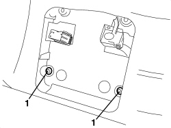
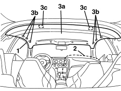
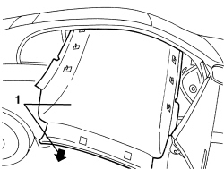

7040H10 ROOF PANEL LINING - R.R.
- Path
- Procedures > 70 FITTINGS > 7040 BODY INTERIOR FITTINGS AND TRIM > 7040H ROOF PANEL AND PILLARS LINING > 7040H10 ROOF PANEL LINING - R.R.
- Kind
- repair procedure (removal / refitting; the operation number is the code)
- Applies to
- all engines; all production periods
- Interactive page
- https://sloeber94.github.io/elrnDB-aBrrSpdr/en/#/946002632
Applies to: all engines; all production periods
 Removing
Removing
 Refitting
Refitting- Remove the rear parcel shelf.
Op. 7040G30 BOOT LIGHT BULB HOLDER - R.R.
- Work on both sides of the vehicle.
Op. 7050A22 REAR SEAT CUSHION - R+R
Op. 7040H42 REAR PILLAR TRIM (ONE), LEFT OR RIGHT- R.R
Op. 7040H38 CENTRE PILLAR UPPER ELEMENT (ONE), LEFT OR RIGHT - R.R
Op. 7040H30 FRONT PILLAR TRIM (ONE), LEFT OR RIGHT - R.R.
Op. 7065C34 SUN BLIND (ONE), LEFT OR RIGHT - R.R.
Op. 7040E40 FRONT COURTESY LIGHT - R.R.
Op. 7065C60 INTERIOR REAR VIEW MIRROR FOR VERSIONS WITH RAIN/DUSK SENSOR - R.R.
Or, alternatively.
Op. 7065C68 INTERIOR REAR VIEW MIRROR - R+R
Op. 7005A34 FRONT SIDE DOOR COMPARTMENT SEAL - R.R
- Completely lower the front seat backrests backwards.
1. Working via the front courtesy light housing, undo the bolts fixing the roof lining.

Applies to: all engines; all production periods
1. Release the left door housing seal in the roof lining area.
2. Place a protective cloth on the right dashboard trim area to prevent damaging it during the extraction of the roof lining.
3. Lower the roof lining (3a) releasing the inner retainers (3b) and the velcro retainers (3c).

Applies to: all engines; all production periods
1. Remove the roof lining extracting it via the right door housing, positioning it as illustrated.

Applies to: all engines; all production periods
Refitting
Removing- Check that the roof lining is not damaged.
- Fit the roof lining in the vehicle, via the right door housing.
- Attach the roof lining to the retainers.
- Fit the left door housing seal.
- Working in the front courtesy light opening, tighten the bolts fixing the roof lining.
- Lift up the front seat backrests.
Op. 7005A34 FRONT SIDE DOOR COMPARTMENT SEAL - R.R
Op. 7065C68 INTERIOR REAR VIEW MIRROR - R+R
Op. 7065C60 INTERIOR REAR VIEW MIRROR FOR VERSIONS WITH RAIN/DUSK SENSOR - R.R.
Op. 7040E40 FRONT COURTESY LIGHT - R.R.
Op. 7065C34 SUN BLIND (ONE), LEFT OR RIGHT - R.R.
Op. 7040H30 FRONT PILLAR TRIM (ONE), LEFT OR RIGHT - R.R.
Op. 7040H38 CENTRE PILLAR UPPER ELEMENT (ONE), LEFT OR RIGHT - R.R
Op. 7040H42 REAR PILLAR TRIM (ONE), LEFT OR RIGHT- R.R
Topics linked from this page (10)
- 7005A34 FRONT SIDE DOOR COMPARTMENT SEAL - R.R
- 7040E40 FRONT COURTESY LIGHT - R.R.
- 7040G30 BOOT LIGHT BULB HOLDER - R.R.
- 7040H30 FRONT PILLAR TRIM (ONE), LEFT OR RIGHT - R.R.
- 7040H38 CENTRE PILLAR UPPER ELEMENT (ONE), LEFT OR RIGHT - R.R
- 7040H42 REAR PILLAR TRIM (ONE), LEFT OR RIGHT- R.R
- 7050A22 REAR SEAT CUSHION - R+R
- 7065C34 SUN BLIND (ONE), LEFT OR RIGHT - R.R.
- 7065C60 INTERIOR REAR VIEW MIRROR FOR VERSIONS WITH RAIN/DUSK SENSOR - R.R.
- 7065C68 INTERIOR REAR VIEW MIRROR - R+R